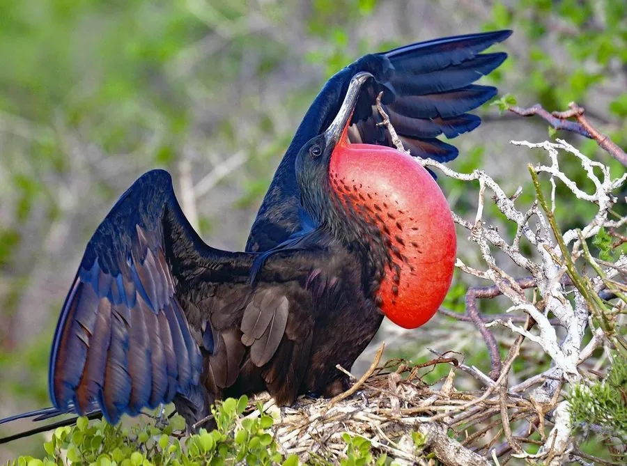

鸟类 · 动物界
丽色军舰鸟 Fregata magnificens

美洲热带海域的大型军舰鸟，雄鸟黑色羽衣配红色喉囊，飞行时翼展近 2.2 米，常抢夺其他海鸟的食物。
- 分类
- 门脊索动物门纲鸟纲目鲣鸟目科军舰鸟科属军舰鸟属
- 栖息环境
- 美洲热带海洋及岛屿，繁殖期在岛上灌木上营巢
- 地理分布
- 美洲热带和亚热带海域，从美国佛罗里达、加勒比海到巴西，中国无分布
- 保护级别
- IUCN 无危（LC）；非中国分布物种
物种志
丽色军舰鸟体长 89–114 cm，翼展 217–244 cm。雄鸟通体黑色，繁殖期喉部的红色喉囊充气鼓起，像一个巨大的红色气球；雌鸟背部黑色、胸腹部白色。它的翅膀细长，飞行时几乎不拍翅，能在海面上空长时间滑翔。
丽色军舰鸟分布于美洲的热带和亚热带海域，从美国佛罗里达、加勒比海到巴西沿海，繁殖于热带岛屿。它们以鱼、乌贼为食，也常在空中拦截鲣鸟等海鸟，抢夺其捕获的食物。繁殖期在岛屿灌木上营巢，每窝产卵 1 枚，孵化约 50 天。丽色军舰鸟是美洲热带海洋的标志性海鸟，目前被列为无危物种；它并非中国分布物种，在中国没有记录。
形态与习性
- 食性鱼、乌贼，也抢夺其他海鸟的食物
- 体长89–114 cm
- 翼展217–244 cm
- 繁殖每窝 1 枚卵，孵化约 50 天
- 特征雄鸟繁殖期喉囊充气鼓起如红色气球
- 寿命野外约 20 年
趣味知识
- 丽色军舰鸟的翼展接近 2.5 m，却几乎不在水面停留。
- 雄鸟繁殖期会把红色喉囊充气鼓起，向雌鸟炫耀。
- 它常在空中拦截其他海鸟抢夺食物，是热带海洋的“海盗”。